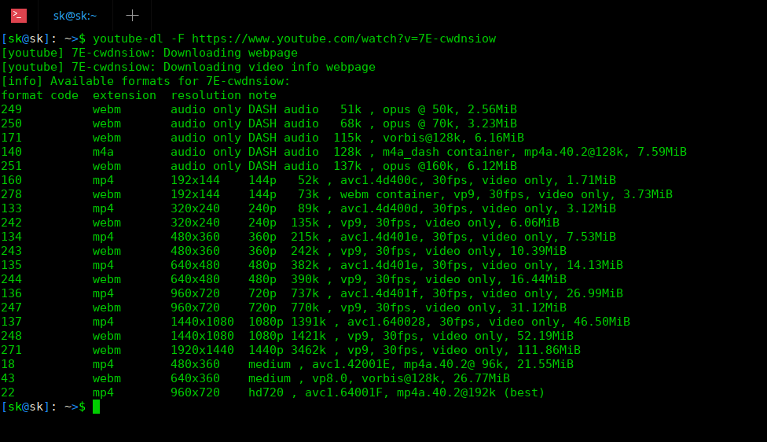

Here, I have compiled most commonly used Youtube-dl commands to download a video or playlist from YouTube.
To download a video or the entire playlist from YouTube, just mention the URL like below:
$ youtube-dl https://www.youtube.com/watch?v=7E-cwdnsiow
If you want to download video or playlist with a custom name of your choice, the command would be:
$ youtube-dl -o 'abdul kalam inspirational speech' https://www.youtube.com/watch?v=7E-cwdnsiow
Replace "abdul kalam inspirational speech" with your own name.
Do you want to save the video in some other location? Use -o flag followed by the target location like below.
$ youtube-dl -o '~/Downloads/abdul kalam speech' https://www.youtube.com/watch?v=7E-cwdnsiow
Here I am downloading the video to the Downloads directory.
[youtube] 7E-cwdnsiow: Downloading webpage
[download] Destination: /home/sk/Downloads/abdul kalam speech.f271
[download] 100% of 111.86MiB in 01:00
[download] Destination: /home/sk/Downloads/abdul kalam speech.f251
[download] 100% of 6.12MiB in 00:03
[ffmpeg] Merging formats into "/home/sk/Downloads/abdul kalam speech.webm"
Deleting original file /home/sk/Downloads/abdul kalam speech.f271 (pass -k to keep)
Deleting original file /home/sk/Downloads/abdul kalam speech.f251 (pass -k to keep)
You can also include additional details, such as the title, the uploader name (channel name) and upload date etc., in the file name by using the following command:
$ youtube-dl -o '%(title)s by %(uploader)s on %(upload_date)s in %(playlist)s.%(ext)s' https://www.youtube.com/watch?v=7E-cwdnsiow
Sometimes, you might want to download multiple videos from or any other site. If so, just mention the URL of the videos with space-separated like below:
$ youtube-dl <url1> <url2>
Alternatively, you can put them all in a text file and pass it to Youtube-dl as an argument like below.
$ youtube-dl -a url.txt
This command will download all videos mentioned in the url.txt file.
Youtube-dl allows us to download audio only from a YouTube video. If you ever been in a situation to download only the audio, run:
$ youtube-dl -x https://www.youtube.com/watch?v=7E-cwdnsiow
By default, Youtube-dl will save the audio in Ogg (opus) format.
If you prefer to download any other formats, for example mp3, run:
$ youtube-dl -x --audio-format mp3 https://www.youtube.com/watch?v=7E-cwdnsiow
This command will download the audio from the given video/playlist, convert it to an MP3 and save it in the current directory. Please note that you should install either ffmpeg or avconv to convert the file to mp3 format.
To download a video along with its other details such as description, metadata, annotations, subtitles, and thumbnail etc., use the following command:
$ youtube-dl --write-description --write-info-json --write-annotations --write-sub --write-thumbnail https://www.youtube.com/watch?v=7E-cwdnsiow
Suggested read:
To list all available formats that a video or playlist is available in, use the following command:
$ youtube-dl --list-formats https://www.youtube.com/watch?v=7E-cwdnsiow
Or,
$ youtube-dl -F https://www.youtube.com/watch?v=7E-cwdnsiow
Sample output:
List all available formats of a YouTube video using youtube-dl
As you can see in the above screenshot, Youtube-dl lists all available formats of the given video. From left to right, it displays the video format code, extension and resolution note of the respective video. This can be helpful when you want to download a video at a specific quality or format.
To retrieve the file size of a video, use -F flag.
$ youtube-dl -F https://www.youtube.com/watch?v=7E-cwdnsiow
You will see the file size at the end of each file.
Sample output:
[youtube] 7E-cwdnsiow: Downloading webpage
[info] Available formats for 7E-cwdnsiow:
format code extension resolution note
249 webm audio only tiny 51k , opus @ 50k (48000Hz), 2.56MiB
250 webm audio only tiny 68k , opus @ 70k (48000Hz), 3.23MiB
140 m4a audio only tiny 128k , m4a_dash container, mp4a.40.2@128k (44100Hz), 7.59MiB
251 webm audio only tiny 137k , opus @160k (48000Hz), 6.12MiB
160 mp4 192x144 144p 52k , avc1.4d400c, 30fps, video only, 1.71MiB
278 webm 192x144 144p 73k , webm container, vp9, 30fps, video only, 3.73MiB
133 mp4 320x240 240p 89k , avc1.4d400d, 30fps, video only, 3.12MiB
242 webm 320x240 240p 135k , vp9, 30fps, video only, 6.06MiB
134 mp4 480x360 360p 215k , avc1.4d401e, 30fps, video only, 7.53MiB
243 webm 480x360 360p 242k , vp9, 30fps, video only, 10.39MiB
135 mp4 640x480 480p 382k , avc1.4d401e, 30fps, video only, 14.13MiB
244 webm 640x480 480p 390k , vp9, 30fps, video only, 16.44MiB
136 mp4 960x720 720p 737k , avc1.4d401f, 30fps, video only, 26.99MiB
247 webm 960x720 720p 770k , vp9, 30fps, video only, 31.12MiB
137 mp4 1440x1080 1080p 1391k , avc1.640028, 30fps, video only, 46.50MiB
248 webm 1440x1080 1080p 1421k , vp9, 30fps, video only, 52.19MiB
271 webm 1920x1440 1440p 3462k , vp9, 30fps, video only, 111.86MiB
18 mp4 480x360 360p 360k , avc1.42001E, mp4a.40.2@ 96k (44100Hz), 21.55MiB
22 mp4 960x720 720p 578k , avc1.64001F, mp4a.40.2@192k (44100Hz) (best)
By default, Youtube-dl will download the best available quality video. However, it is also possible to download a video or playlist at a specific quality or format.
YouTube is capable of downloading videos in the following qualities:
For example, if you want to download best quality format (both audio and video), just use the following command:
$ youtube-dl -f best https://www.youtube.com/watch?v=7E-cwdnsiow
Similarly, to download audio-only with best quality:
$ youtube-dl -f bestaudio https://www.youtube.com/watch?v=7E-cwdnsiow
To download worst quality video-only format, use the following command:
$ youtube-dl -f worstvideo https://www.youtube.com/watch?v=7E-cwdnsiow
You can also combine different format options like below.
$ youtube-dl -f bestvideo+bestaudio https://www.youtube.com/watch?v=7E-cwdnsiow
The above command will download best quality video-only and best quality audio-only formats and merge them together with ffmpeg or avconv. Make sure you have installed any one of these tools on your system.
If you don't want to merge, replace + (plus) operator with , (comma) like below:
$ youtube-dl -f 'bestvideo,bestaudio' https://www.youtube.com/watch?v=7E-cwdnsiow -o '%(title)s.f%(format_id)s.%(ext)s'
This command will download best quality video and best quality audio and will not mix them. In this case, you will get two files, one is audio and another is video. In this example, an output template (-o option) is recommended as bestvideo and bestaudio may have the same file name.
We can even download a video or playlist at a specific quality with specific resolution.
For instance, the following command will download the best quality video in 480 pixel resolution (less than or equal to 480p).
$ youtube-dl -f "best[height<=480]" https://www.youtube.com/watch?v=7E-cwdnsiow
Like already said, we can group the format selectors to get a specific quality video. The following command will download best format available(both audio and video) but no better than 480p.
$ youtube-dl -f 'bestvideo[height<=480]+bestaudio/best[height<=480]' https://www.youtube.com/watch?v=7E-cwdnsiow
All videos have format codes which we can use to download a video at specific quality.
To find the format code, just list the available formats using any one of the following commands:
$ youtube-dl --list-formats https://www.youtube.com/watch?v=7E-cwdnsiow
Or
$ youtube-dl -F https://www.youtube.com/watch?v=7E-cwdnsiow
List all available formats with youtube-dl
As you can see in the above screenshot, all format codes of the given video are listed in the first column. The best quality format is given at the end (the format code is 22). So, the command to download best quality format is:
$ youtube-dl -f 22 https://www.youtube.com/watch?v=7E-cwdnsiow
Some videos may not have the same formats available while you download videos from playlist. In such cases, you can specify multiple format codes in any preferred order of your choice. Take a look at the following example:
$ youtube-dl -f 22/17/18 <playlist_url>
As per the above example, Youtube-dl will download the videos in format 22 if it is available.
If the format 22 is not available, it will then download format 17 if it is available.
If both 22 and 17 formats are not available, it will finally try to download format 18.
If none of the specified formats are available, Youtube-dl will complain that no suitable formats are available for download.
Please note that that slash is left-associative, i.e. formats on the left hand side are preferred.
Download video(s) in your preferred format, say for example MP4, just run:
$ youtube-dl --format mp4 https://www.youtube.com/watch?v=7E-cwdnsiow
Or,
$ youtube-dl -f mp4 https://www.youtube.com/watch?v=7E-cwdnsiow
Like I already mentioned in the previous section, some videos may not available in your preferred formats. In such cases, Youtube-dl will download any other best available formats.
For instance, the following command will download best quality MP4 format file. If MP4 format is not available, then it will download any other best available format.
$ youtube-dl -f 'bestvideo[ext=mp4]+bestaudio[ext=m4a]/best[ext=mp4]/best' https://www.youtube.com/watch?v=7E-cwdnsiow
If you want to download them with custom filename, do:
$ youtube-dl -f mp4 -o '%(title)s.f%(format_id)s.%(ext)s' https://www.youtube.com/watch?v=7E-cwdnsiow
When you download multiple videos from a playlist, you might want to download videos within a certain size only.
For example, this command will not download any videos smaller than the given size, say 100MB:
$ youtube-dl --min-filesize 100M <playlist_url>
If you don't want to download videos larger than the given size, do:
$ youtube-dl --max-filesize 100M <playlist_url>
We can also combine format selection operators to download certain size videos.
The following command will download best video-only format but not bigger than 100 MB.
$ youtube-dl -f 'best[filesize<100M]' https://www.youtube.com/watch?v=7E-cwdnsiow
Youtube-dl allows us to filter and download video or playlist by their upload date. This will be very helpful when you want to download videos from a playlist that contains 100s of videos.
For instance, to download videos uploaded at an exact date, for example October 01, 2018, the command would be:
$ youtube-dl --date 20181001 <URL>
Download videos uploaded on or before a specific date:
$ youtube-dl --datebefore 20180101 <URL>
Download videos uploaded on or after a specific date:
$ youtube-dl --dateafter 20180101 <URL>
Download only the videos uploaded in the last 6 months:
$ youtube-dl --dateafter now-6months <URL>
To download videos between a specific date, for example January 01, 2018 to January 01, 2019, use the following command:
$ youtube-dl --dateafter 20180101 --datebefore 20190101 <URL>
Suggested read:
This is yet another useful feature of Youtube-dl. It allows us to download a specific song(s) from a playlist that contains 100s of songs.
For example, to download the 10th file from a playlist, run:
$ youtube-dl --playlist-items 10 <playlist_url>
You can also download and convert the file to other format at the same time. For the the following command will download the 1st file from the playlist and convert it to .mp3 format:
$ youtube-dl --playlist-items 1 -x --audio-format mp3 <playlist_url>
Similarly, to download multiple random files, just specify indices of the videos in the playlist separated by commas like below::
$ youtube-dl --playlist-items 2,3,7,10 <playlist_url>
You can also specify the range of songs. To download a video playlist starting from a certain video, say 10, to end:
$ youtube-dl --playlist-start 10 <playlist_url>
To download only the files starting from 2nd to 5th in a playlist, use:
$ youtube-dl --playlist-start 2 --playlist-end 5 <playlist_url>
This is another notable feature of Youtube-dl. It allows us to download only videos suitable for the given age.
Say for example, to download all "Let's Play" videos that aren't marked "NSFW" or age-restricted for 7 year-olds from a playlist, run:
$ youtube-dl --match-title "let's play" --age-limit 7 --reject-title "nsfw" <playlist_url>
You can use -r option to limit the speed. For example, the following command will limit the speed to 50K.
$ youtube-dl -r 50K <URL>
Note that speed is specified in bytes per second.
By default, youtube-dl will automatically resume the download where you left it off. If it is doesn't resume the download for any reason, just force the resume of partially downloaded files with -c, --continue flag:
$ youtube-dl -c <URL>
Youtube-dl has a lot more options. I guess these examples are just enough to use Youtube-dl to download videos from online. For more details, refer Youtube-dl help section.
$ youtube-dl --help
Here are some common errors that you might encounter from time to time. Most errors will get fixed themselves after updating the youtube-dl to its most recent version.
However, a few errors like below will not get fixed even if you're using an updated youtube-dl version.
When downloading videos from YouTube, sometimes you will get an error like below.
ERROR: unable to download video data: HTTP Error 403: Forbidden
To fix this error, refer the following guide.
This is another common error. When you download a video, you will get an error like below:
[youtube] _XEgknKEBws: Downloading webpage
WARNING: Requested formats are incompatible for merge and will be merged into mkv.
ERROR: unable to open for writing: [Errno 36] File name too long: '\xe0\xae\xa8\xe0\xaf\x8b\xe0\xae\xaf\xe0\xaf\x8d \xe0\xae\x8e\xe0\xae\xa4\xe0\xae\xbf\xe0\xae\xb0\xe0\xaf\x8d\xe0\xae\xaa\xe0\xaf\x8d\xe0\xae\xaa\xe0\xaf\x81 \xe0\xae\x9a\xe0\xae\x95\xe0\xaf\x8d\xe0\xae\xa4\xe0\xae\xbf\xe0\xae\xaf\xe0\xaf\x88 \xe0\xae\x85\xe0\xae\xa4\xe0\xae\xbf\xe0\xae\x95\xe0\xae\xb0\xe0\xae\xbf\xe0\xae\x95\xe0\xaf\x8d\xe0\xae\x95\xe0\xaf\x81\xe0\xae\xae\xe0\xaf\x8d \xe0\xae\x87\xe0\xae\xaf\xe0\xae\xb1\xe0\xaf\x8d\xe0\xae\x95\xe0\xaf\x88 \xe0\xae\xaa\xe0\xae\xbe\xe0\xae\xa9\xe0\xae\x95\xe0\xae\xae\xe0\xaf\x8d - \xe0\xae\xa8\xe0\xae\xbe\xe0\xae\xae\xe0\xaf\x87 \xe0\xae\xa4\xe0\xae\xaf\xe0\xae\xbe\xe0\xae\xb0\xe0\xae\xbf\xe0\xae\xaa\xe0\xaf\x8d\xe0\xae\xaa\xe0\xae\xa4\xe0\xaf\x81 \xe0\xae\x8e\xe0\xae\xaa\xe0\xaf\x8d\xe0\xae\xaa\xe0\xae\x9f\xe0\xae\xbf- \xe0\xae\xae\xe0\xae\xb0\xe0\xaf\x81\xe0\xae\xa4\xe0\xaf\x8d\xe0\xae\xa4\xe0\xaf\x81\xe0\xae\xb5\xe0\xae\xb0\xe0\xaf\x8d \xe0\xae\xa4\xe0\xaf\x80\xe0\xae\xaa\xe0\xae\xbe \xe0\xae\xb5\xe0\xae\xbf\xe0\xae\xb3\xe0\xae\x95\xe0\xaf\x8d\xe0\xae\x95\xe0\xae\xae\xe0\xaf\x8d-_XEgknKEBws.f136.mp4.part'
This is actually not a problem but an expected behavior for youtube-dl.
By default, youtube-dl will download the highest quality audio and the highest quality video streams available and then join them into a compatible container like mkv, mp4 etc.
If these audio and video streams doesn’t fit well in an mp4 container, youtube-dl will then pack them in mkv container and display the above warning message.
In such cases, you can ignore the mkv warning and download the best quality video and the best quality audio but only in an mp4 container by explicitly mentioning the desired best quality audio and video formats like below:
$ youtube-dl -f 'bestvideo[ext=mp4]+bestaudio[ext=m4a]' https://youtu.be/_XEgknKEBws
When you try to download a YouTube video that has long name, you will probably get this error:
[youtube] _XEgknKEBws: Downloading webpage
ERROR: unable to open for writing: [Errno 36] File name too long: '\xe0\xae\xa8\xe0\xaf\x8b\xe0\xae\xaf\xe0\xaf\x8d \xe0\xae\x8e\xe0\xae\xa4\xe0\xae\xbf\xe0\xae\xb0\xe0\xaf\x8d\xe0\xae\xaa\xe0\xaf\x8d\xe0\xae\xaa\xe0\xaf\x81 \xe0\xae\x9a\xe0\xae\x95\xe0\xaf\x8d\xe0\xae\xa4\xe0\xae\xbf\xe0\xae\xaf\xe0\xaf\x88 \xe0\xae\x85\xe0\xae\xa4\xe0\xae\xbf\xe0\xae\x95\xe0\xae\xb0\xe0\xae\xbf\xe0\xae\x95\xe0\xaf\x8d\xe0\xae\x95\xe0\xaf\x81\xe0\xae\xae\xe0\xaf\x8d \xe0\xae\x87\xe0\xae\xaf\xe0\xae\xb1\xe0\xaf\x8d\xe0\xae\x95\xe0\xaf\x88 \xe0\xae\xaa\xe0\xae\xbe\xe0\xae\xa9\xe0\xae\x95\xe0\xae\xae\xe0\xaf\x8d - \xe0\xae\xa8\xe0\xae\xbe\xe0\xae\xae\xe0\xaf\x87 \xe0\xae\xa4\xe0\xae\xaf\xe0\xae\xbe\xe0\xae\xb0\xe0\xae\xbf\xe0\xae\xaa\xe0\xaf\x8d\xe0\xae\xaa\xe0\xae\xa4\xe0\xaf\x81 \xe0\xae\x8e\xe0\xae\xaa\xe0\xaf\x8d\xe0\xae\xaa\xe0\xae\x9f\xe0\xae\xbf- \xe0\xae\xae\xe0\xae\xb0\xe0\xaf\x81\xe0\xae\xa4\xe0\xaf\x8d\xe0\xae\xa4\xe0\xaf\x81\xe0\xae\xb5\xe0\xae\xb0\xe0\xaf\x8d \xe0\xae\xa4\xe0\xaf\x80\xe0\xae\xaa\xe0\xae\xbe \xe0\xae\xb5\xe0\xae\xbf\xe0\xae\xb3\xe0\xae\x95\xe0\xaf\x8d\xe0\xae\x95\xe0\xae\xae\xe0\xaf\x8d-_XEgknKEBws.f136.mp4.part
To fix this error, simply download the video with shorter name of your choice with "-o" flag like below:
$ youtube-dl -f 'bestvideo[ext=mp4]+bestaudio[ext=m4a]' -o video.mp4 https://youtu.be/_XEgknKEBw